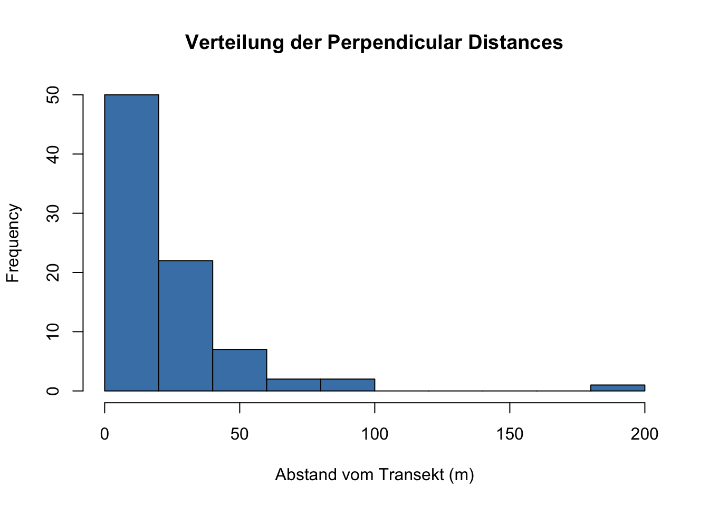
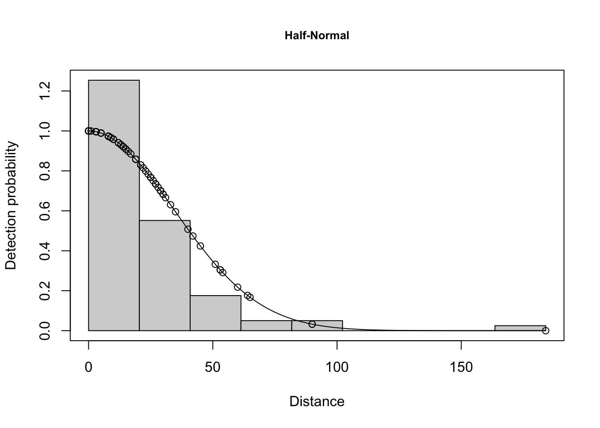
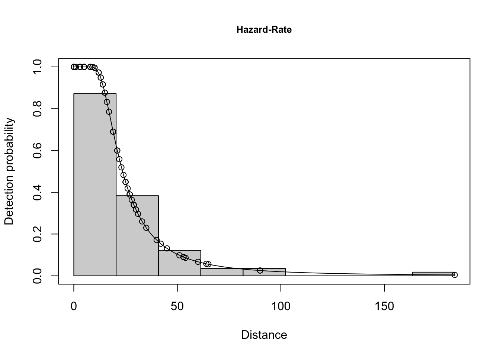
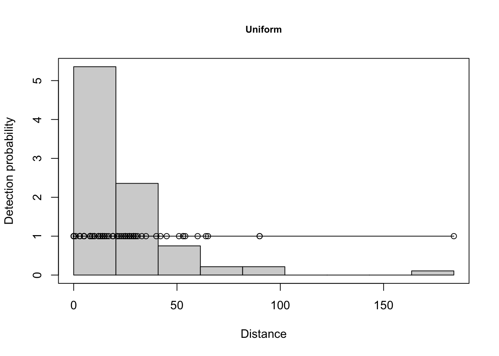
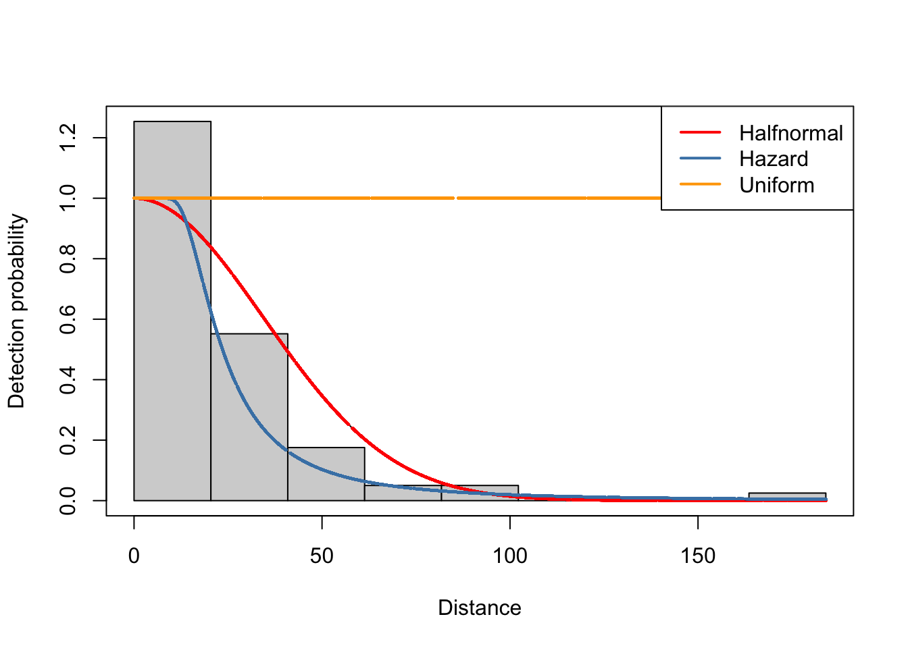

![]()
library(readxl) # Zum lesen von Exel-Dateien
library(Distance)
library(tidyverse)
dat <- read_excel("daten/Cat_Data.xlsx")Übung Woche 8: Dichteschätzung von Wildkatzen in Windsor
Wir verwenden für diese Übung Daten aus einer Studie zur Dichte wildlebender Katzen (Felis catus) in Windsor, Ontario (Kanada). Hand (2019) schätzte die Katzendichte mittels Line-Transekt Distance Sampling entlang von 105 Straßentransekten (je 1 km Länge), die im Sommer 2014 begangen wurden. Das Studiengebiet umfasst ca. 138 km². Die Daten stehen unter einer CC-BY-Lizenz zur Verfügung (Hand, A. (2019). Ecology and Evolution, 9(5), 2699–2705. https://doi.org/10.1002/ece3.4938).
Die benötigten Pakete und Daten:
Transectist die ID des TransektsPerpendicular Distance (m)ist der senkrechte Abstand der Katze vom Transekt in Metern
Aufbereiten der Daten
Das Paket Distance erwartet einen Datensatz mit bestimmten Spaltennamen. Wir benennen die relevanten Spalten um und fügen Hilfsspalten hinzu.
dat.ds <- dat |> mutate(
distance = `Perpendicular Distance (m)`,
Effort = 1,
Sample.Label = Transect,
Region.Label = "Windsor 1"
) |>
select(Region.Label, Sample.Label, Effort, distance)Aufgaben
- Wie viele Beobachtungen enthält
dat.ds? Wie viele unterschiedliche Transekte gibt es? - Plotten Sie die Verteilung der Distanzen mit
hist(). Beschreiben Sie die Form: Wie verändert sich die Entdeckungshäufigkeit mit zunehmendem Abstand? - Nehmen Sie eine feste Transektbreite (halbseitig) von 5, 10, 20 und 50 Metern an und eine Entdeckungswahrscheinlichkeit von 1. Berechnen Sie die Dichte (ind/km²) für jede Breite. Wie verändert sich die Schätzung — und warum?
Lösungsvorschlag
# 1
nrow(dat.ds)[1] 84n_distinct(dat.ds$Sample.Label)[1] 35# 2
hist(dat.ds$distance,
main = "Verteilung der Perpendicular Distances",
xlab = "Abstand vom Transekt (m)",
col = "steelblue")
# 3
dat_5m <- dat.ds |> filter(distance < 5)
(n_sichtungen <- nrow(dat_5m))[1] 13# Die beprobte Fläche beträgt
# 105 Transekte: 5m breit und 1000m lang
A <- 105 * # Anzahl Transekte
2 * 5 * # die Breite
1000. # Länge
n_sichtungen / A # Pro m^2[1] 1.238095e-05n_sichtungen / A * 1e6[1] 12.38095# Jetzt für die unterschiedlichen Breiten
sapply(c(5, 10, 20, 50), function(x)
filter(dat.ds, distance < x) |> nrow() / (105 * 2 * x * 1000) * 1e6
)[1] 12.380952 14.285714 11.904762 7.047619# Die Dichte sinkt mit zunehmender Breite, weil nahe am Transekt mehr Katzen
# pro Flächeneinheit gesehen werden als weiter weg — die Entdeckungs-
# wahrscheinlichkeit nimmt mit der Distanz ab, wird hier aber ignoriert.Dichteschätzung mittels Distance Sampling
Wir passen drei Modelle mit unterschiedlichen Entdeckungsfunktionen an: Half-Normal (hn), Hazard-Rate (hr) und Uniform (unif).
conversion <- convert_units("meter", "kilometer", "square kilometer")
m1.hn <- ds(dat.ds, key = "hn", adjustment = NULL, convert_units = conversion)
m1.hr <- ds(dat.ds, key = "hr", adjustment = NULL, convert_units = conversion)
m1.unif <- ds(dat.ds, key = "unif", adjustment = NULL, convert_units = conversion)Aufgaben
- Vergleichen Sie die drei Modelle anhand des AIC. Welches Modell schneidet am besten ab?
- Plotten Sie die Entdeckungsfunktion für alle drei Modelle. Welche Funktion passt am besten zu dem, was Sie in der Distanzverteilung aus Aufgabe 2 gesehen haben?
- Berechnen Sie für das beste Modell die Effective Strip Width (ESW) aus der mittleren Entdeckungswahrscheinlichkeit \(\hat{p}\) und der maximalen Suchweite \(w\): \(\widehat{\text{ESW}} = w \cdot \hat{p}\). Berechnen Sie damit die Dichte in ind/km². Vergleichen Sie mit dem publizierten Wert von Hand (2019): ~13,3 Katzen/km².
Lösungsvorschlag
# 4
AIC(m1.hn, m1.hr, m1.unif) df AIC
m1.hn 1 718.1418
m1.hr 2 692.6752
m1.unif 0 876.1092# Hazard-Rate hat den niedrigsten AIC
# 5
plot(m1.hn, main = "Half-Normal")
plot(m1.hr, main = "Hazard-Rate")
plot(m1.unif, main = "Uniform")
# Optional, können Sie die unterschiedlichen Entdeckungsfunktionen vergleichen
nd <- data.frame(distance = 0:150)
plot(m1.hn, showpoints = FALSE)
add_df_covar_line(m1.hn, data = nd, col = "red", lwd = 2)
add_df_covar_line(m1.hr, data = nd, col = "steelblue", lwd = 2)
add_df_covar_line(m1.unif, data = nd, col = "orange", lwd = 2)
# Legende
legend("topright",
lwd = 2, lty = 1,
col = c("red", "steelblue", "orange"),
legend = c("Halfnormal", "Hazard", "Uniform"))
# 6
s <- summary(m1.hr)
esw <- s$ds$width * s$ds$average.p
esw[1] 29.94155D <- nrow(dat.ds) / (105 * 2 * esw/1000 * 1 * 1)
D[1] 13.35936ESW und Abundanz
Aufgaben
- Berechnen Sie die Dichte mit allen drei Entdeckungsfunktionen. Wie stark unterscheiden sich die Schätzungen? Was schließen Sie daraus für die Bedeutung der Modellwahl?
- Berechnen Sie die geschätzte Gesamtabundanz für das Studiengebiet (138 km²) auf Basis des besten Modells. Vergleichen Sie mit dem publizierten Wert von ~1.858 Katzen.
- Berechnen Sie ein 95%-Konfidenzintervall für die Dichte und die Abundanz. Verwenden Sie dafür die Unsicherheit in \(\hat{p}\): \(\widehat{\text{ESW}}_{\pm} = w \cdot (\hat{p} \pm 2 \cdot \text{SE}_{\hat{p}})\). Den SE finden Sie in
summary(m1.hr)$ds$average.p.se.
Lösungsvorschlag
# 7
berechne_dichte <- function(modell, name) {
s <- summary(modell)
esw <- s$ds$width * s$ds$average.p
D <- nrow(dat.ds) / # Das ist C; über alle Transekte
(105 * # Anzahl Transekte; somit brauchen wir nicht die C_i's, da wir keine Transekte unterscheiden
2 * esw/1000 # Die Transektfläche: 2 * ESW (-> Breite) * 1000 (Länge) * 1e6 um von m^2 auf km^2 zu kommen
# Anstatt C / (2 * esw * 1000) * 1e6 um auf eine Ind pro km^2 kommen, kann man auch einfach
# C / (2 * esw / 1000) rechnen.
)
paste("ESW:", round(esw, 2), "m und Dichte:", round(D, 2), "ind/km^2")
}
berechne_dichte(m1.hr, "Hazard-Rate")[1] "ESW: 29.94 m und Dichte: 13.36 ind/km^2"berechne_dichte(m1.hn, "Half-Normal")[1] "ESW: 43.07 m und Dichte: 9.29 ind/km^2"berechne_dichte(m1.unif, "Uniform")[1] "ESW: 184 m und Dichte: 2.17 ind/km^2"# 8
s <- summary(m1.hr)
esw <- s$ds$width * s$ds$average.p
D <- nrow(dat.ds) / (105 * 2 * esw/1000)
# Abundanz
round(D * 138)[1] 1844# 9
se <- s$ds$average.p.se
esw.ug <- s$ds$width * (s$ds$average.p - 2 * se)
esw.og <- s$ds$width * (s$ds$average.p + 2 * se)
D.ug <- nrow(dat.ds) / (105 * 2 * esw.og/1000)
D.og <- nrow(dat.ds) / (105 * 2 * esw.ug/1000)
paste0("95%-KI Dichte: (", round(D.ug, 2), ",", round(D.og, 2), ") ind/km^2")[1] "95%-KI Dichte: (10.83,17.43) ind/km^2"paste0("95%-KI Abundanz: (", round(D.ug * 138), ",", round(D.og * 138), ") Individuen")[1] "95%-KI Abundanz: (1494,2406) Individuen"